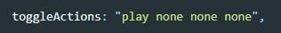
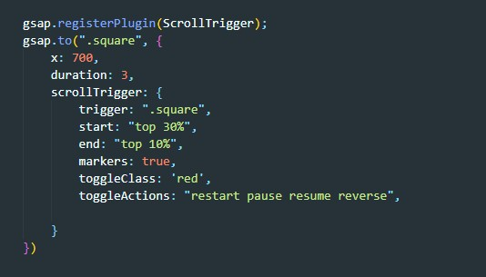

Переключатель действия
В качестве свойства toggleClass указыватеся строка с 4-мя словами. По умолчанию эта строчка выглядит вот так:

что означает каждое слово?
- первое - означает что будет если тригер вошел в область анимации (onEnter) - т.е. play - проиграется
- второе - поведение тригера когда он покинет (onLeave) область анимации
- третье - поведение если он войдет в область обратно (onEnterBack)
- четвертое - поведение в случае если тригер покинет область в обратном направлении (onLeaveBack)
Какие значения можно использовать?
- play - проиграть анимацию один раз
- restart - повторить, т.е. если первым значением указать не play, а restart, то анимация будет проигрываться каждый раз как тригер заходит в область анимации
- reverse - играть анимацию в обратном порядке, т.е. по сути тригер вернется в свое исходное состояние
- pause - анимация поставится на паузу
- resume - анимация продолжится после паузы
- reset - сбросить анимацию. тригер моментально войдет в свое исходное состояние
- complete - моментально приводит тригер к его конечному состоянию анимации
Пример JavaScript
